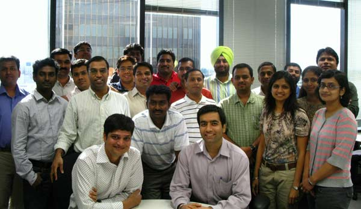

Goings On
“Leader readiness (LR)” and “Project Management Fundamentals (PMF)” training programs were conducted at Phoenix location on 9th to 12th July and 14th to 16th Aug. Ishita Bardhan conducted the LR training and shared her varied knowledge and experience with 27 participants. K P Shukla and Bill MaAllister as executive speakers shared their rich experience of working with diversified teams and also spoke about the challenges that lie ahead. Subramanian Seetharaman was in charge of the PMF training and shared his knowledge and experience with a group of 23 participants.
Good training programs do not happen over night, but have to be carefully thought out and implemented. Organizing the above training programs for all US on-site IBM India employees and end to end management involved coordinating many elements such as getting the nominations from the individuals /managers, ensuring that the prospective candidates have completed the prerequisite courses,following up with the prospective candidates & arranging the logistics for the successful training completion.IBM Export Blue training team successfully organized both the training programs & were a grand success as was evident from the feedback received from the participants.

By Prasad M Venkatasubrahmanya
What's Up
Payment Card, Domain Certification is an Export Blue home grown tool that is aimed to equip the FSS practitioners,working in payment card industry with functional knowledge beyond the scope of their respective technologies/applications. It provides a comprehensive view of the Payment Card industry starting from foundation to higher levels of certification . It will also ensure that the practitioner has an in-depth understanding of what is "going on" behind the scene in Payment card industry and help them to perform task with a greater clarity, thus gaining a competitive edge.
Idea for domain certification evolved when Export Blue leadership raised a concern about inconsistent level of business knowledge amongst practitioners and steep learning curve that any resource joining the team had, before he/she could actively participate in any project discussions.The initial scope was to ensure that all Export Blue practitioners are certified in Foundation level course and thus have a consistent basic awareness of Payment card industry.
A team of 10-12 dedicated and focussed members were put together with a goal to create a scalable tool that would house the different levels of courses. Team was divided into courseware and infrastructure/development teams and met twice on a weekly basis to review the current status and discuss and plan for the next steps. Using common quality tools like brainstorming and affinity, the topics for the course was finalized and team researched and gathered material for the courseware.
Export Blue Account Executive, Sanjay Bhargava and other Sr. memebers pitched in with timely support & encouragement and helped to mitigate all the issues/concerns related to infrastructure.
Foundation level certification course was launched in July 2008 and it was well received by Export Blue practitioners. Work on the next level of payment card certification is in progress and will be rolled out shortly. Future levels of certification courses would cater to specialization in key aspects of payment card industry like settlement process, authorization process, card acquisition, card dispute & fraud processes.
Led by: Ramesh Ramanujam
Core team members - Athar Mansoor,Jaikumar Bhaskaran,Prasad Telavane,Tuhin Dey, Vikram Bhosle
Significant contributors for Foundation course - Arun Saxena,Ashish Bhave, Jalandhara K,Neha Pampanwar,Raj R Narayan, Ritu Godbole,Waliullah Khan
By Bhargavi Raghavendra
Wins
Beginning of this year Export Blue account rolled out a strategy to grow Existing Business at American Express with the help of IBM India Project Managers. PM's have successfully leveraged their relationship & demonstrated selling skills which have resulted in Business Growth in multiple engagements with American Express. IBM India team members have gone above and beyond their day to day responsibilities by participating & owning various RFPs and creating winning proposals. Below is one example of such win where IBM won a fixed price project against Infosys, TCS & Syntel.
MYSTIC GCL (Global Closed Loop) project is an initiative to source global closed loop data ( comprising of both merchant and card member data). This data is then used by American Express business partners and client managers in creating marketing campaigns and other analytics reporting . The scope of Mystic GCL project is to source all the international closed loop data, (which includes the international Cardmember demographic, Transactional, and Merchant data), from various source systems into the Mystic Data Warehouse using the IBM Information Server suite of products ( Data-Stage and Quality Stage). The TCV of this project is $ 515,000 and engaging 12 resources at offshore and onshore. The project is expected to be delivered by September 2009.
The team led by Sukumar Rajagopalan who helped won this project comprised of: Joshi Mathew, Gaurav Jain, Jyotsna Mallipeddi, Anand Dafaria, Sachin Bansal, Atul Bahrie, Sachin Nilawar & Trevor G Rebello.
Bill McAllister, Solution Manager, GBS US worked with the customer closely to ensure that Export Blue is positioned ahead of the competition and closed the deal successfully.
Here is what Customer had to say how IBM created a difference against the competitors:
"Besides creating a competitive proposal, IBM demonstrated a very strong knowledge of underlying systems and technology platforms."
Kameshwar Shukla, Lead Partner, GBS US said -
"Export Blue is the only account out there where all IBM India PMs are taking such active leadership role in business growth! You all are directly helping GBS US achieve the growth and profitability targets - not indirectly, but very directly".
By Shobhit Bansa
|